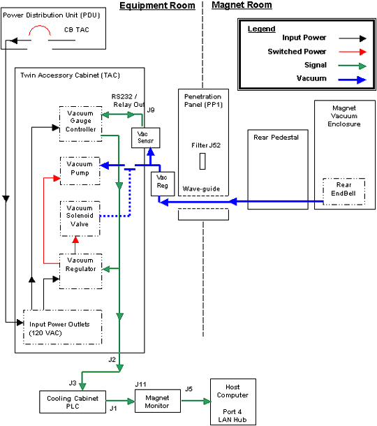

Operating Documentation
Direction 5133330-3, Rev# 14
Signa EXCITE HD 3.0T Service Methods
Module Version 1.0, Version Date 5/3/07
Operating Documentation |
The Quiet Technology used on the Signa TwinSpeed system is partially achieved by evacuating the air from around the Gradient coil and RF Body coil within the warm bore of the magnet. The components that make up the Vacuum system and are located in both the MR Equipment Room and the Magnet Room. See Illustration 1, Block Diagram.
Illustration 1: BLOCK DIAGRAM

| NOTE: | As of January, 2003 the software needed to communicate between the magnet monitor and the PLC has not been released. There is no method to remotely monitor the vacuum level. |
| NOTE: | As of March, 2002 a new vacuum sensor and regulator replaced the existing units. The new configuration does not require calibration. See picture below to identify vacuum sensor. |
Illustration 2: Sensor Identification

| NOTE: | An FMI (60631) will be issued in March 2003 that will locate the Vacuum Sensor to the TAC cabinet. This FMI will also add a Vacuum Regulator to the vacuum line. The purpose of the Vacuum Regulator is to prevent the vacuum from going below 140 Torr if the primary Vacuum Control system fails. |
On initial startup the Vacuum Gauge Controller will supply two 15-vdc signals to the Vacuum Regulator Box. One signal activates a solid-state relay, which supplies 120-vac to the Vacuum Pump, and the other 15-vdc signal activates a solid-state relay, which supplies 120-vac to the Vacuum Solenoid Valve. The Solenoid energizes causing the Vacuum Valve to open thereby allowing the Vacuum Pump to evacuate the Magnet Vacuum Enclosure. After about 10 minutes the vacuum level should decrease from atmosphere (760 torr at sea level) down to about 150 torr. Once the Gauge Controller reaches the lower limit of 150 torr (set point 1 - Low) it will remove the 15-vdc control signal for the Vacuum Solenoid Valve, allowing it to close. The Vacuum Pump continues to run with no load applied. The vacuum level within the Magnet Vacuum Enclosure will start to drift upward until the upper limit of 190 torr (set point 1 - High) is reached. The Gauge Controller re-activates the Vacuum Solenoid Valve causing it to open and the evacuation process is repeated. The typical drift time (no evacuation) for a normal operating system is 1 to 4 minutes.
The Mechanical Vacuum Regulator uses a flexible diaphram that will prevent the vacuum level from going below 140Torr. This regulator is factory set and is not field adjustable. The Vacuum Regulator was added as a safety feature via FMI (60631) to prevent body coil failures.
In the event of a failure where the vacuum level could be lower than 130 torr a second set point is used to de-active the Vacuum Pump. If the vacuum level ever reaches 130 torr (set point 2 – low) then the Gauge Controller will remove the 15-vdc control signal going to the solid-state relay that controls the input power to the Vacuum Pump. The control signal will remain at 0-vdc until the upper limit of 200 torr (set point 2 – High) is reached. The Gauge Controller will then change the control voltage from 0-vdc to 15-vdc activating the solid-state relay again. This feature was added to prevent damage to the RF Body Coil as components on the coil will arc and be damaged at vacuum levels less than 100 torr.
The Gauge Controller also sends the vacuum level data (analog format) to the Cooling Cabinet – Programmable Logic Control (PLC) where it is then relayed to the Magnet Monitor via the RS232 data link. The Magnet Monitor continuously monitors the data link and will send alarm status to the OLC and Host computer as configured by the operator.